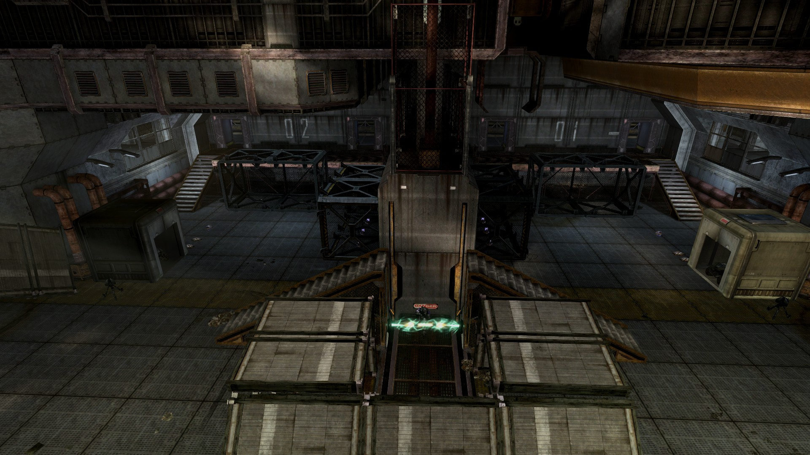
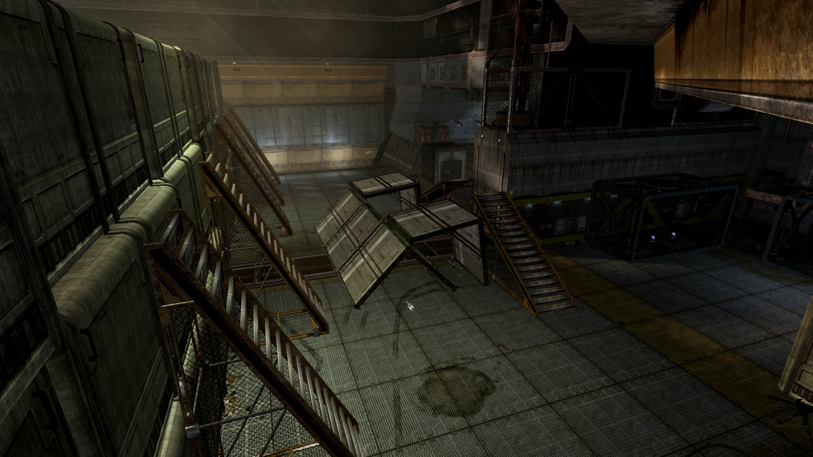
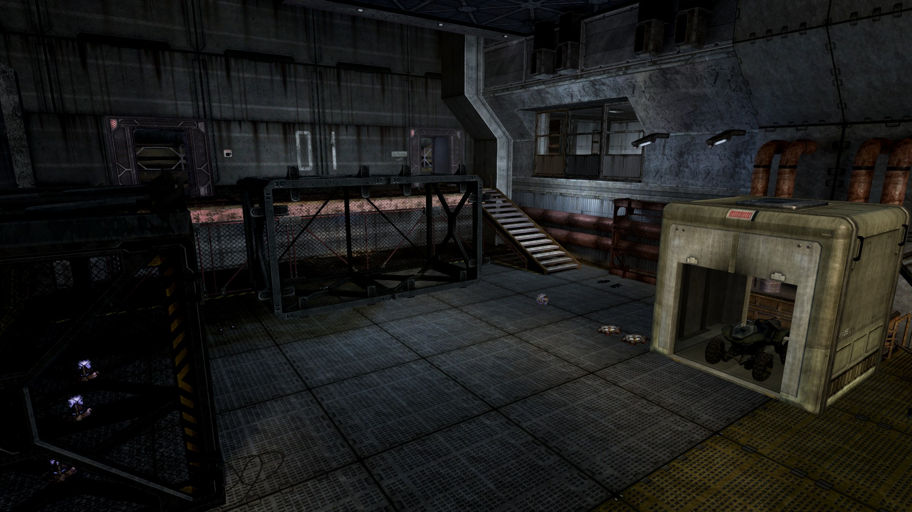
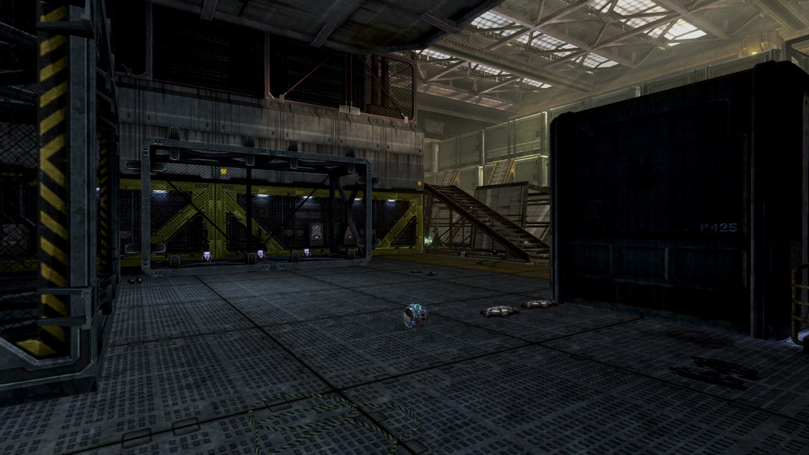
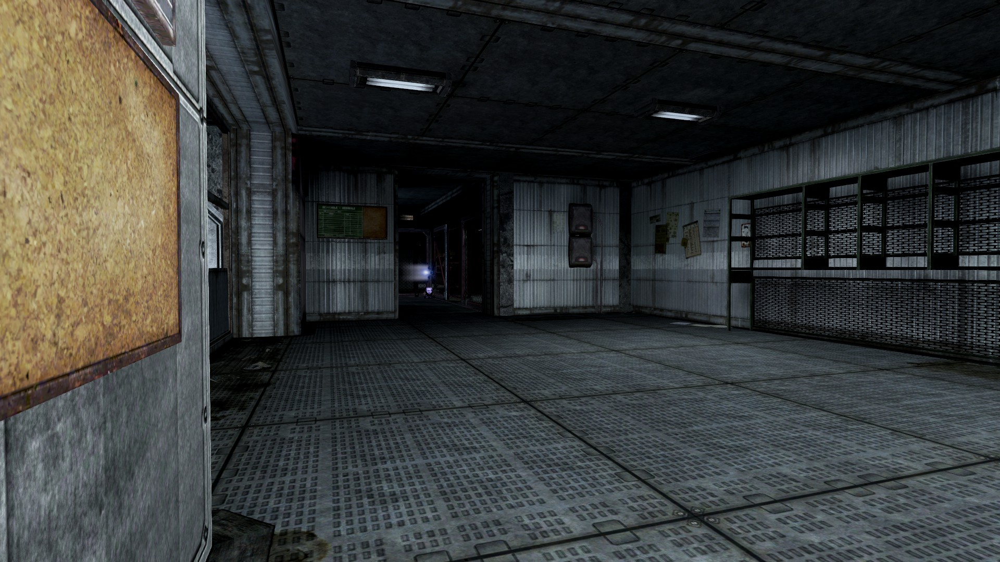
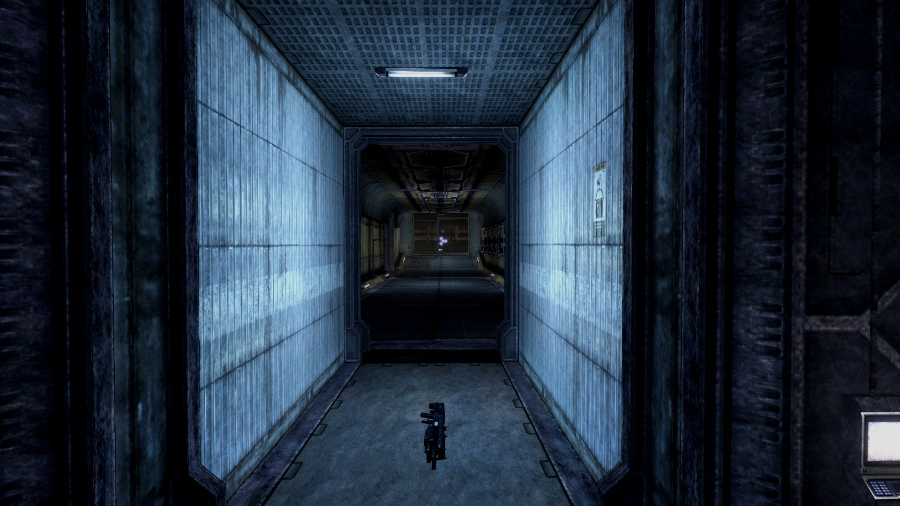

Head Long V5
-

An overview of the map. The central tunnel structure and stairs help make the proximity of each staging area functionally a bit further away from each other than the base geometry provides. -

The stairs along the map's wall allow for careful movement along what would otherwise be a very exposed part of the map. -

The staging areas are the most open sections of the map and also are primarily where players can stock up on equipment. The crates also provide ample opportunities for escape or surprise. -

While this map does feature equipment like the power drain and trip mines, the weapon selection is entirely human owing to this being a makeshift training ground. -

These "spawn rooms" were designed to be fairly safe environments to be dropped into thanks to their walls partially covering exposed openings and the unique feature of the map, grav-lifts being used to softly encourage one directional travel out of the rooms or resources to be spent on destroying them. -

The shotgun placed directly in the middle of the hallway between the two "spawn rooms" is there to encourage some usage of these less trafficked areas. Given the design of the rest of the map, the shotgun is extremely deadly if used carefully.